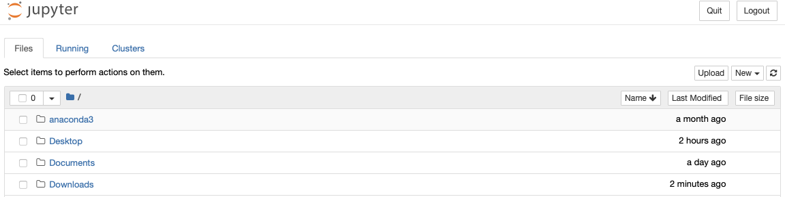
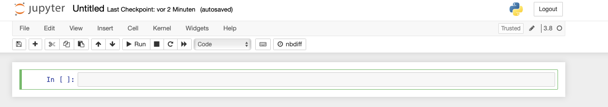

What is Python and why use it?#
Python (from the comedy group Monty Python) is an interpreted programming language, meaning the written code needs to be “translated” to commands for the machine by a so called interpreter in order to be run. This apparent detour however makes for a better readability, writability and error location for us humans. Python is free to use and it’s also free to contribute by writing own packages. As of February 2021, the TIOBE index, a measure for popularity of programming languages, ranks python third (behind C and Java), stating its widespread acceptance and usage. One field in which python has had major impact is statistics and emerging from it, data science. A plethora of packages are available to work with data smoothly in many ways. Eventually, in order to come to this joy, one must first install python properly.
Installation#
Albeit there are different ways to install and manage python and its packages and versions is to use the Anaconda distribution. It comes with a variety of programs and allows for a simple installation of all needed dependencies. Furthermore, it accesses the conda repository to provide a user-friendly installation of additional packages.
Installing more Packages#
On the left in the anaconda navigator, click on “Environments”. A list of all installed packages is shown with the respective version on the right. Blue colour and a little arrow indicate that updates for this package are available.
Warning
New is not always better. As some packages may depend on others, their latest update might come with changes not yet supported. Check for compatibility before updating!
Selecting “not installed” provides a list of not (yet) installed packages. The search panel lets you find the desired package. To install, select the checkbox and click “Apply” (appears only after checking a box) in the lower right corner.
Jupyter Notebook#
After a successful installation, feel free to make yourself familiar with the included programs. However, this course will depend mainly on the use of jupyter notebooks. These are web applications and thus should open a browser window where they offer all the functionality necessary for this course. Besides the usual coding, they offer ways to present your code clearly by enabling more formatting functionality, e.g. with markdown.
Double click the jupyter symbol in your anaconda navigator to start and get a browser window opened, looking similar to this:

You should be able to browse your files and navigate to any folder. Feel invited to experiment with opening different data types you find on your machine.
To open a new notebook, click the drop down menu new on the right and choose your installed python version. A new tab in your browser opens with an empty notebook.

On the very top “Untitled” is found. By clicking on it, one can rename the file. Make yourself familiar with all possible options in the bar beneath the title. Since most options you will discover can be called by Keyboard shortcuts, making use of the shortcuts will reduce the number of times where the mouse is needed and it is thus highly recommended. Press “h” on your Keyboard to view the available keyboard shortcuts. In the following some useful shortcuts for basic operations are presented:
to enter edit Mode, press enter. The blue frame of the currently selected cell will change to green and a cursor will appear inside the cell. Write your name and press escape to leave edit mode.
press b to create a new cell below the current cell. Then use the up arrow to navigate your selection back to the first cell.
press a to create a new cell above the currently selected cell.
navigate to the lowest cell and double press d to delete it
Inside the cells, code is written and each cell can be run separately. When running all cells at once, they will be executed from top to bottom.